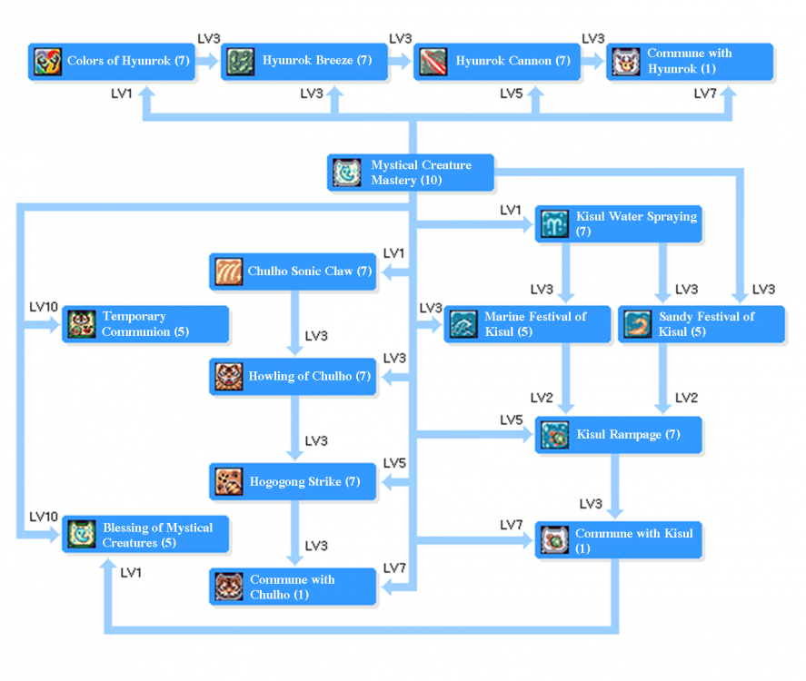

Spirit Handler
 | |||||||||||||||||||
|---|---|---|---|---|---|---|---|---|---|---|---|---|---|---|---|---|---|---|---|
| |||||||||||||||||||
Spirit Handler is Summoner's (Doram/Cat) Advanced class. To become one, you must be base level 200 and job level 60. Like Summoner skills, they are three branches that leads to each build (Chulho tree, Kisul tree, and Hyunrok tree).
- The Chulho tree has physical ranged damager skills.
- The Kisul tree has supportive skills.
- The Hyunrok tree has magical damager skills and its relation to it.
| Skill | Type | Properties | Description |
|---|---|---|---|
 Mystical Creature Mastery Mystical Creature Mastery
|
Passive |
|
By communicating with mystical creatures, increases P.Atk, S.Matk and the effectiveness of mystical creatures skills.
|
 Chulho Sonic Claw Chulho Sonic Claw
|
Ranged Damage |
|
Using the sharp claw of Chulho by scratches the air towards the target, inflicts long ranged physical damage to the target.
Deals additional damage depends on level of Mystical Creature Mastery user learned, user's base level and POW. If the user learned Commune With Chulho, increases skill damage and applies critical damage, the critical chance is the user's Cri. The effectiveness of critical modifier is applied by half.
Commune With Chulho : (2900 + (Mystical Creature Mastery level x 100))% Atk.
Commune With Chulho : (4950 + (Mystical Creature Mastery level x 100))% Atk.
Commune With Chulho : (7000 + (Mystical Creature Mastery level x 100))% Atk.
Commune With Chulho : (9050 + (Mystical Creature Mastery level x 100))% Atk.
Commune With Chulho : (11100 + (Mystical Creature Mastery level x 100))% Atk.
Commune With Chulho : (13150 + (Mystical Creature Mastery level x 100))% Atk.
Commune With Chulho : (15200 + (Mystical Creature Mastery level x 100))% Atk. |
 Howling of Chulho Howling of Chulho
|
Ranged Damage |
|
Roars with the power of Chulho, inflicts long ranged physical damage to all targets around the user.
Inflicts [Hogogong effect] to the targets for 12 seconds. Deals additional damage depends on level of Mystical Creature Mastery user learned, user's base level and POW. If the user learned Commune With Chulho, increases skill damage.
Commune With Chulho : 1850 + (Mystical Creature Mastery level x 100)% Atk. AoE: 5x5. Commune With Chulho AoE: 7x7
Commune With Chulho : 3000 + (Mystical Creature Mastery level x 100)% Atk. AoE: 5x5. Commune With Chulho AoE: 7x7
Commune With Chulho : 4150 + (Mystical Creature Mastery level x 100)% Atk. AoE: 5x5. Commune With Chulho AoE: 7x7
Commune With Chulho : 5300 + (Mystical Creature Mastery level x 100)% Atk. AoE: 7x7. Commune With Chulho AoE: 9x9
Commune With Chulho : 6450 + (Mystical Creature Mastery level x 100)% Atk. AoE: 7x7. Commune With Chulho AoE: 9x9
Commune With Chulho : 7600 + (Mystical Creature Mastery level x 100)% Atk. AoE: 7x7. Commune With Chulho AoE: 9x9
Commune With Chulho : 8750 + (Mystical Creature Mastery level x 100)% Atk. AoE: 9x9. Commune With Chulho AoE: 11x11 |
 Hogogong Strike Hogogong Strike
|
Ranged Damage |
|
Punches the front paws of Chulho to nearby targets who are affected by [Hogogong effect], inflicts long ranged physical damage to the targets for 3 hits.
Deals additional damage depends on level of Mystical Creature Mastery user learned, user's base level and POW, has a chance to trigger critical, critical chance is the user's Cri. The effectiveness of critical modifier is applied by half. If the user learned Commune With Chulho, increases skill damage and increases AP recovery amount.
Commune With Chulho : 600 + (Mystical Creature Mastery level x 20))% Atk. AoE: 7x7
Commune With Chulho : 950 + (Mystical Creature Mastery level x 20))% Atk. AoE: 7x7
Commune With Chulho : 1300 + (Mystical Creature Mastery level x 20))% Atk. AoE: 7x7
Commune With Chulho : 1650 + (Mystical Creature Mastery level x 20)% Atk. AoE: 9x9
Commune With Chulho : 2000 + (Mystical Creature Mastery level x 20)% Atk. AoE: 9x9
Commune With Chulho : 2350 + (Mystical Creature Mastery level x 20)% Atk. AoE: 9x9
Commune With Chulho : 2700 + (Mystical Creature Mastery level x 20)% Atk. AoE: 11x11 |
 Commune With Chulho Commune With Chulho
|
Passive |
|
Empowers the skills that borrow the power from Chulho through perfect communion with the mystical creature Chulho. |
 Kisul Water Spray Kisul Water Spray
|
Recovery |
|
Fires the water cannon contained healing power of Kisul, recovers HP to self and nearby party member around the user.
Recovers additional amount depends on level of Mystical Creature Mastery user learned, user's base level and CRT. If the user learned Commune With Kisul, increases area of effect and healing amount.
Commune With Kisul : Healing amount : 750 + (Mystical Creature Mastery level x 150) / area of effect : 11 x 11 cells.
Commune With Kisul : Healing amount : 1500 + (Mystical Creature Mastery level x 150) / area of effect : 11 x 11 cells.
Commune With Kisul : Healing amount : 2250 + (Mystical Creature Mastery level x 150) / area of effect : 13 x 13 cells.
Commune With Kisul : Healing amount : 3000 + (Mystical Creature Mastery level x 150) / area of effect : 13 x 13 cells.
Commune With Kisul : Healing amount : 3750 + (Mystical Creature Mastery level x 150) / area of effect : 15 x 15 cells.
Commune With Kisul : Healing amount : 4500 + (Mystical Creature Mastery level x 150) / area of effect : 15 x 15 cells.
Commune With Kisul : Healing amount : 5250 + (Mystical Creature Mastery level x 150) / area of effect : 17 x 17 cells. |
 Marine Festival of Kisul Marine Festival of Kisul
|
Support |
|
With the power of the sea by Kisul, increases POW, CRT and CON to self and nearby party member around the user.
If the user learned Commune With Kisul, increases area of effect and doubles the skill duration.
Doesn't stack with Cardinal's
Commune With Kisul : area of effect : 9 x 9 cells.
Commune With Kisul : area of effect : 11 x 11 cells.
Commune With Kisul : area of effect : 13 x 13 cells.
Commune With Kisul : area of effect : 15 x 15 cells.
Commune With Kisul : area of effect : 17 x 17 cells. |
 Sandy Festival of Kisul Sandy Festival of Kisul
|
Support |
|
With the power of the sea by Kisul, increases SPL, WIS and STA to self and nearby party member around the user.
If the user learned Commune With Kisul, increases area of effect and doubles the skill duration.
Doesn't stack with Cardinal's
Commune With Kisul : area of effect : 9 x 9 cells.
Commune With Kisul : area of effect : 11 x 11 cells.
Commune With Kisul : area of effect : 13 x 13 cells.
Commune With Kisul : area of effect : 15 x 15 cells.
Commune With Kisul : area of effect : 17 x 17 cells. |
 Kisul Rampage Kisul Rampage
|
Recovery |
|
Using the powerful healing effect of Kisul.
Recovers 2 AP every 1 second to all party members, excluding the user, with 7 x 7 cells around the user. The user can't use other skills while this skill is active, and if the user leaves the standing cell due to certain effect such as being knocked-back,the skill effect is canceled. If the user learned Commune With Kisul, increases area of effect to 11 x 11 cells and increases AP recovery amount to 4.
|
 Commune With Kisul Commune With Kisul
|
Passive |
|
Empowers the skills that borrow the power from Kisul through perfect communion with the mystical creature Kisul. |
 Color of Hyunrok Color of Hyunrok
|
Support |
|
With the mysterious magical power of Hyunrok, endows elemental property to Catnip Meteor, Hyunrok Breeze and Hyunrok Cannon for 300 seconds.
If the user learned Commune With Hyunrok, using this skill also increases Catnip Meteor damage by 50%. When using skill level 7, the endowment is canceled.
|
 Hyunrok Breeze Hyunrok Breeze
|
Magic Damage |
|
Using the mysterious magical power of Hyunrok to create breeze on the ground, inflicts neutral property magical damage every 0.3 seconds for 4 seconds to all targets within range.
Deals additional damage depends on level of Mystical Creature Mastery user learned, user's base level and SPL. If the user learned Commune With Hyunrok, increases skill damage. Damage property can be changed according to Colors of Hyunrok.
Commune With Hyunrok : 1700 + (Mystical Creature Mastery level x 40)% Matk / area of effect : 5 x 5 cells.
Commune With Hyunrok : 2650 + (Mystical Creature Mastery level x 40)% Matk / area of effect : 5 x 5 cells.
Commune With Hyunrok : 3600 + (Mystical Creature Mastery level x 40)% Matk / area of effect : 7 x 7 cells.
Commune With Hyunrok : 4550 + (Mystical Creature Mastery level x 40)% Matk / area of effect : 7 x 7 cells.
Commune With Hyunrok : 5500 + (Mystical Creature Mastery level x 40)% Matk / area of effect : 9 x 9 cells.
Commune With Hyunrok : 6450 + (Mystical Creature Mastery level x 40)% Matk / area of effect : 9 x 9 cells.
Commune With Hyunrok : 7400 + (Mystical Creature Mastery level x 40)% Matk / area of effect : 11 x 11 cells. |
 Hyunrok Cannon Hyunrok Cannon
|
Magic Damage |
|
Using the mysterious magical power of Hyunrok, fires the powerful magic cannon to the target.
Deals additional damage depends on level of Mystical Creature Mastery user learned, user's base level and SPL. If the user learned Commune With Hyunrok, increases skill damage and increases AP recovery amount. Damage property can be changed according to Colors of Hyunrok.
Commune With Hyunrok : 2900 + (Mystical Creature Mastery level x 75)% Matk.
Commune With Hyunrok : 4750 + (Mystical Creature Mastery level x 75)% Matk.
Commune With Hyunrok : 6600 + (Mystical Creature Mastery level x 75)% Matk.
Commune With Hyunrok : 8450 + (Mystical Creature Mastery level x 75)% Matk.
Commune With Hyunrok : 10300 + (Mystical Creature Mastery level x 75)% Matk.
Commune With Hyunrok : 12150 + (Mystical Creature Mastery level x 75)% Matk.
Commune With Hyunrok : 14000 + (Mystical Creature Mastery level x 75)% Matk. |
 Commune With Hyunrok Commune With Hyunrok
|
Passive |
|
Empowers the skills that borrow the power from Hyunrok through perfect communion with the mystical creature Hyunrok. |
 Temporary Communion Temporary Communion
|
Ultimate |
|
Can only be used when the user learned at least one of either Commune with Chulho, Kisul or Hyunrok.
Through the temporary communion with Chulho, Kisul and Hyunrok, the user is in the state of communion of all three mystical creatures for the certain duration. Increases P.Atk, S.Matk and H.Plus for the duration.
|
 Blessing of Mythical Creatures Blessing of Mythical Creatures
|
Ultimate |
|
Gives the blessing of mystical creatures to 1 party member, excluding doram and self, recovers the target's AP to 200 and increases P.Atk, S.Matk for 10 seconds.
When the skill duration ends, target's AP becomes 0. The target can't receive Blessing of Mystical Creatures again for 1 minute.
|


